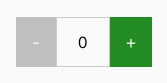

Advanced State Management
Composi provides a convenient way to manage a component's state through use of its setState method. However, you may prefer to have a dedicate library manage state for your components. Bare in mind that if your component is not very complicated or big, it might not make sense to use a third party solution for state management. However, it your app starts to grow in size and complexity, you might want to consider Redux or Mobx. Of course, there are other solutions as well, such as NuclearJS, RxJS etc.
There are two popular solutions for state manage: Redux and Mobx. We will take a look at using them with Composi. If you are already comfortable using these, just give this a skim to see how to update components with them.
We're going to create a simple counter component whose state is managed by Redux and Mobx:

Redux
To use Redux with Composi, you'll need to import it into whatever file you want to use it. Just for the purpose of showing how to integrate these two, we are going to use a very simple counter component. For Redux we will need to create our reducers, action creator and a Redux store. Our component will have have two buttons, one on either side. Licking the minus will decrease the counter value, clicking the plus will increate the value. To integrate the Composi component with Redux, we'll need to assign the Redux store to the component's state.
const { h, Component } from 'composi'
const { createStore } from 'redux'
// Reducer:
function count(state=0, action) {
switch(action.type) {
case 'INCREMENT':
if (state > 99) return 100
return state + 1
case 'DECREMENT':
if (state < 1) return 0
return state - 1;
default:
return state
}
}
// Action Creators:
const increment = () => {
return {
type: 'INCREMENT'
};
};
const decrement = () => {
return {
type: 'DECREMENT'
};
};
// Create Redux store:
const store = createStore(count)
// Extend Component to create counter:
class Counter extends Component {
constructor(opts) {
super(opts)
// Assigning store to component:
this.store = opts.store
// Update component when store state changes:
store.subscribe(() => this.updateFromStore())
// Give counter default value of "0":
this.render = (count = 0) => (
<div id="counter">
<button id="dec" disabled={count==0} onclick={() => this.dec()}>-</button>
<span id="text">{count}</span>
<button id="inc" onclick={() => this.inc()}>+</button>
</div>
)
}
// Use ths method to udpate counter with state changes:
updateFromStore() {
const state = this.store.getState()
this.update(state)
}
inc() {
this.store.dispatch(increment())
}
dec() {
this.store.dispatch(decrement())
}
}
// Create new counter:
const counter = new Counter({
root: 'article',
store: store
})
counter.update()
Mobx
Redux requires quite a bit of boilerplate to work: reducers, action creators, stores, etc. Mobx is much simpler. We are only going to need to import observable and autorun. Mobx has many other useful functions, but we don't need those here.
With Mobx, we create an observable that contains the state for the counter and we assign that to the component's state. After that, all manipulationg of component state is actually being done with the Mobx store. And we use Mobx autorun to tell Mobx to update the component when the Mobx store changes.
const {h, Component} from 'composi'
const { observable, autorun } from 'mobx'
const store = observable({ count: 0})
// Extend Component to create counter:
class Counter extends Component {
constructor(opts) {
super(opts)
this.root = 'article'
// Assign Mobx obersable store to Counter:
this.store = store
// Give counter default value of "0":
this.render = (count = 0) => (
<div id="counter">
<button id="dec" onclick={() => this.dec()} disabled={count==0}>-</button>
<span id="text">{count}</span>
<button id="inc" onclick={() => this.inc()} disabled={count>19}>+</button>
</div>
)
}
inc() {
this.store.count++
}
dec() {
this.store.count--
}
}
// Create new counter:
const counter = new Counter()
// Capture observable store changes and update counter:
autorun(() => counter.update(counter.store.count))